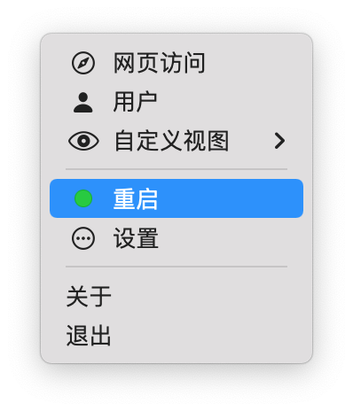

下载安装完后，启动应用，设置好存储目录，然后等待应用状态栏的状态成绿色。

高级选项：喜欢用命令行？打开"终端"并运行： curl -fsSL https://lomosw.lomorage.com/mac/install.sh | bash 这将只安装 lomod 后端服务（无图形界面）到你的用户目录下，无需管理员权限。
curl -fsSL https://lomosw.lomorage.com/mac/install.sh | bash